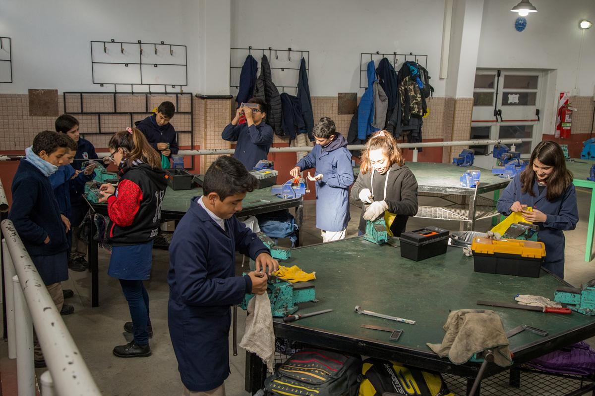
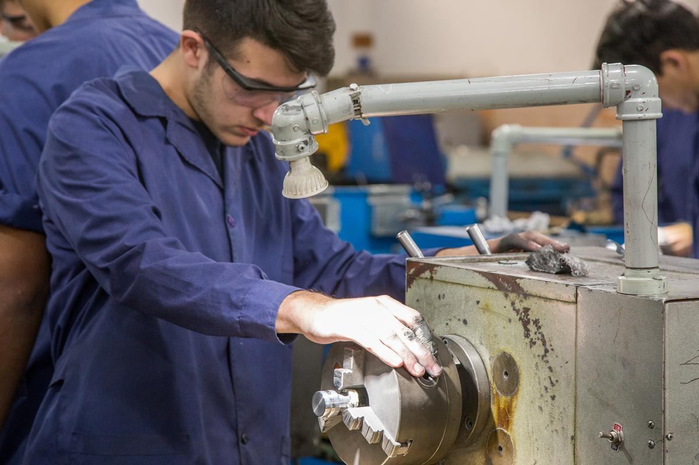
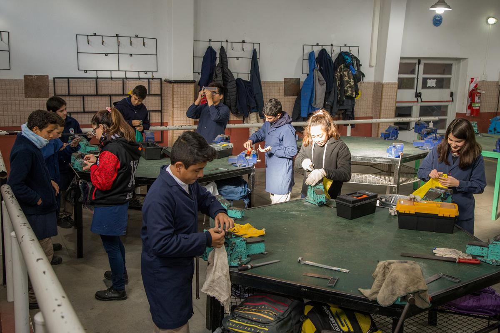
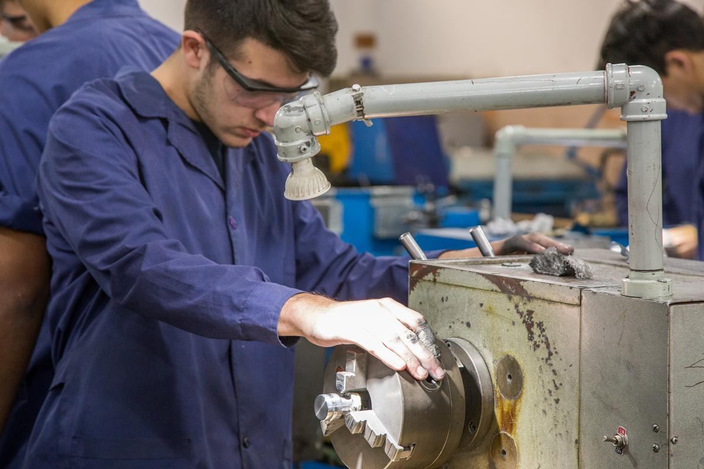

Especialidad
Mecánica
¡Descubrí Mecánica y dale vida a tus ideas! Si te apasionan las máquinas, te gusta entender cómo funcionan las cosas y te gustaría crear desde cero, la especialidad Mecánica es tu camino. Aquí aprenderás a operar y programar máquinas avanzadas que fabrican piezas que usamos todos los días, desde autos hasta electrodomésticos. No solo trabajarás con tecnología de punta como CNC y diseño 3D, sino que también serás clave en la solución de problemas de la industria. Con esta carrera, tendrás la oportunidad de armar, reparar y mantener sistemas que mueven al mundo. Si sueñas con ser el responsable de que todo funcione a la perfección y te atraen los desafíos técnicos, ¡la Mecánica es tu futuro!
¿Qué aprenderán en mecánica?
Los estudiantes de la carrera de Técnico Mecánico adquieren habilidades para operar y programar máquinas-herramientas CNC, realizar mantenimiento industrial, interpretar planos y ensayar materiales. También aplican conocimientos científicos (matemática, física, química) en la resolución de problemas técnicos y gestionan proyectos productivos. Desarrollan competencias en emprendimiento, seguridad laboral y ética profesional, con foco en la sostenibilidad y el impacto ambiental. Están preparados para el trabajo en industrias o continuar estudios superiores
 



¿Cómo son sus instalaciones?
En la especialidad de Mecánica, vas a tener acceso a laboratorios modernos con todo lo que necesitas para convertir tus ideas en realidad. Contamos con máquinas convencionales como tornos, perforadoras y fresadoras, pero lo más emocionante es que también trabajarás con tecnología de última generación: tornos y fresadoras CNC, e impresoras 3D. Podrás crear piezas a partir de tus propios diseños CAD, ¡como los profesionales de la industria! Si te gusta trabajar con tus manos y la tecnología, esta es tu oportunidad de aprender con equipos que te preparan para el futuro.
Proyectos
En la especialidad de Mecánica, ¡trabajamos en proyectos increíbles que están cambiando el mundo! Con un enfoque en la economía circular y la sustentabilidad, buscamos soluciones innovadoras y amigables con el medio ambiente. Algunos de nuestros proyectos incluyen la creación de una trituradora de envases PET, una compactadora de latas de aluminio, un termotanque solar, y el proyecto NIFTY para generar energía limpia y sustentable. Si te interesa cuidar el planeta mientras aprendes a construir tecnología avanzada, ¡la Mecánica es el lugar para vos!